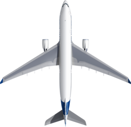
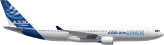
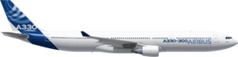

| |
The A330, which comprises of the A330-200 and A330-300, is flown by nearly 120 customers and operators worldwide, with more than 780 aircraft in service today. As of mid 2011, this global inventory has accumulated over 17 million flight hours in over 4 million flights, with a dispatch reliability of 99.6 percent. Excellent short field performance and long range capability enables the A330 to be efficiently utilised both on established routes and expanding markets.
The A330-200 is the shorter-fuselage variant of Airbus’ A330 twin-engine widebody family, and has the versatility to cover all ranges from short-haul to true long-haul, with ideal sizing for point-to-point operations.
The A330-200 is well established with major carriers around the world, and has become a preferred aircraft for charter and leisure operators, as well as the growing low-cost long-haul market segment.
With Airbus commonality in cockpit and cabin systems, an increasing number of airlines that fly the single-aisle A320 Family are discovering the advantages of stepping up to the widebody A330-200 for higher-capacity, longer-range service.
| Category | Data |
|---|---|
| Manufacture date | 1997 |
| Range | 13,400Km |
| Seating Arrangement | 253 persons (3 classes) |
| Max Payload | 36.4 tonnes |
| Engines | PW4000x2 or GE CF6-80E1x2 or RR Trent 700x2 Thrust Range:303-316kN |
| Wingspan | 60.30m |
| Height | 17.39m |
| Overall Length | 58.82m |
The A330-300 has a stretched-fuselage, which matches twin-engine efficiency with increased passenger capacity – all while retaining the A330 Family’s highly comfortable, low noise cabin and operating commonality with the entire Airbus fly-by-wire product line.
It has a range of up to a distant 5,450 nautical miles while carrying 300 passengers in a two-cabin arrangement, seating 36 in first or business class at a 60-inch seat pitch, and 264 in coach at 32-inch pitch
Its designed-in flexibility allows airliners to integrate Airbus’ innovative crew rest facilities without giving up revenue passenger seats.
A secure flight crew location next to the cockpit accommodates one or two bunks, while a pallet-mounted rest area with up to seven bunks for cabin personnel is designed for loading under the main deck, with accessibility via a stair in the centre-left passenger cabin.
| Category | Data |
|---|---|
| Manufacture date | 1993 |
| Range | 10,800Km |
| Seating Arrangement | 295 persons (3 classes) |
| Max Payload | 45.9 tonnes |
| Engines | PW4000x2 or GE CF6-80E1x2 or RR Trent 700x2 Thrust Range:303-320kN |
| Wingspan | 60.30m |
| Height | 16.83m |
| Overall Length | 63.69m |